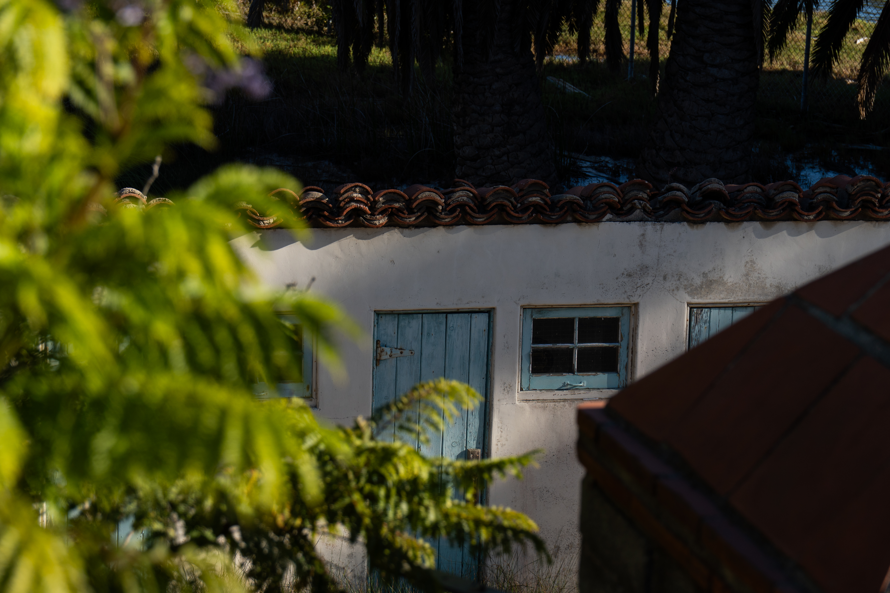
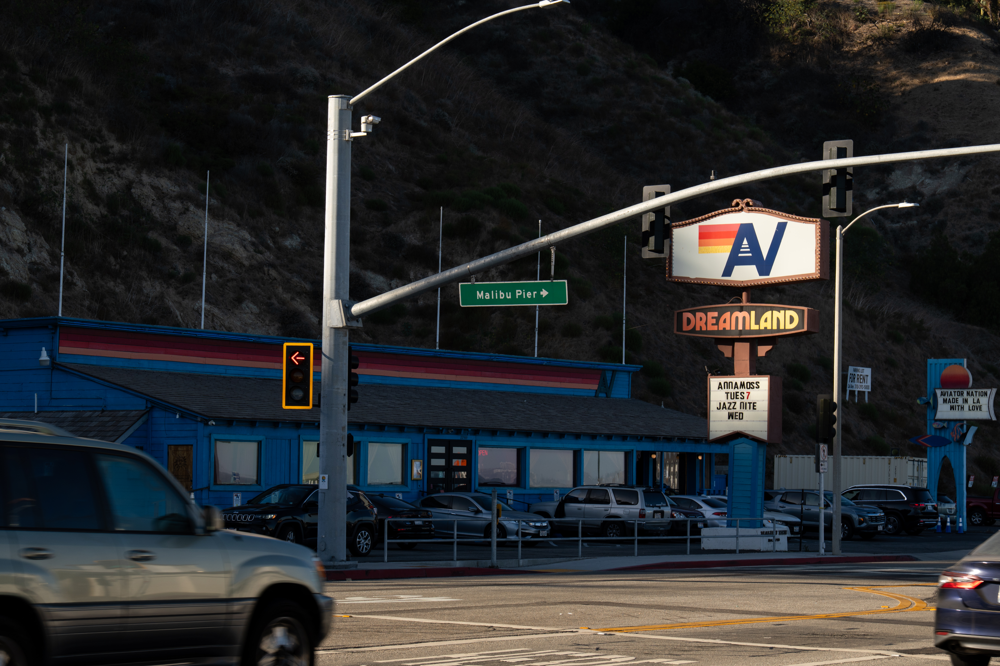
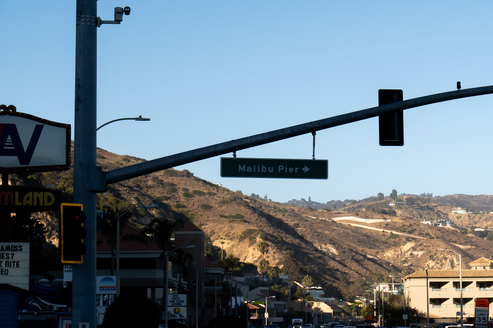
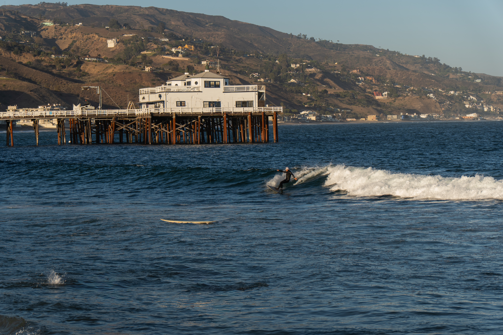
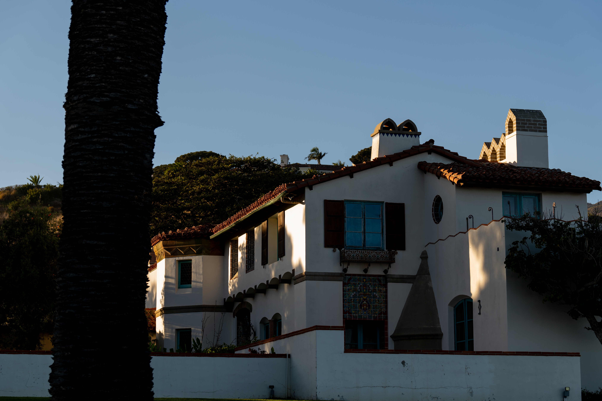
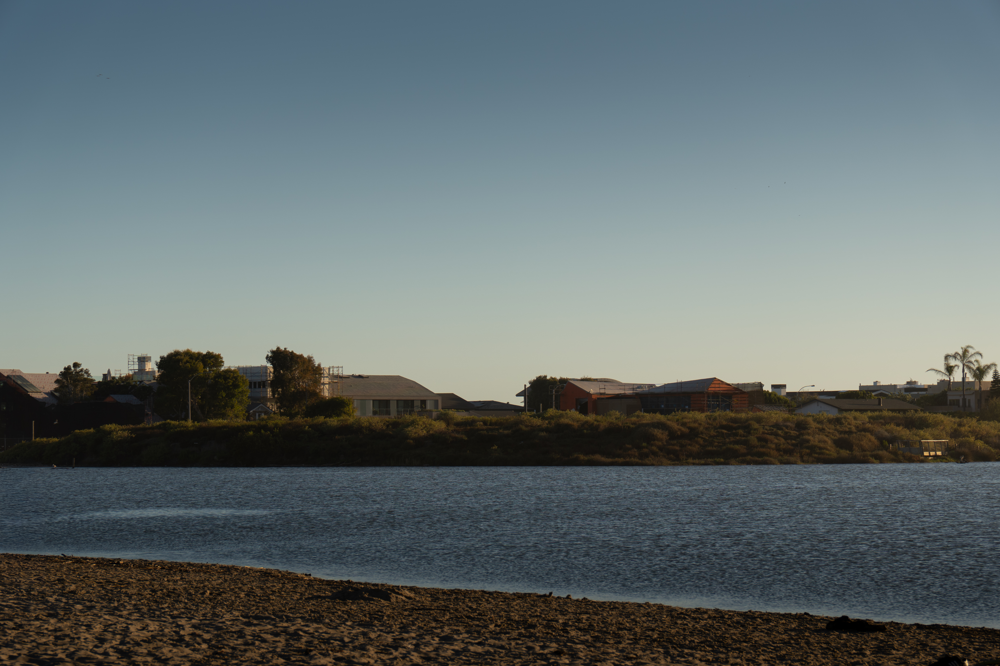
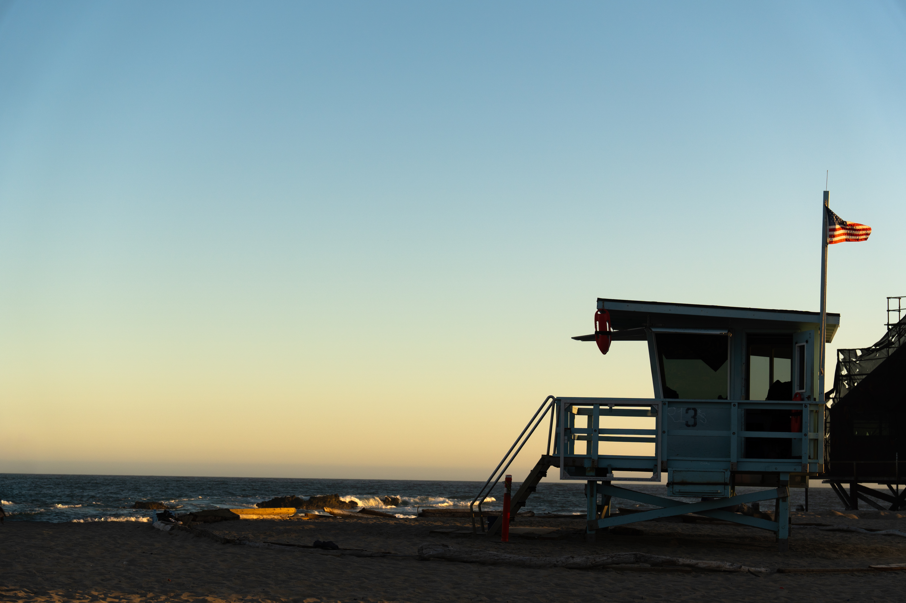
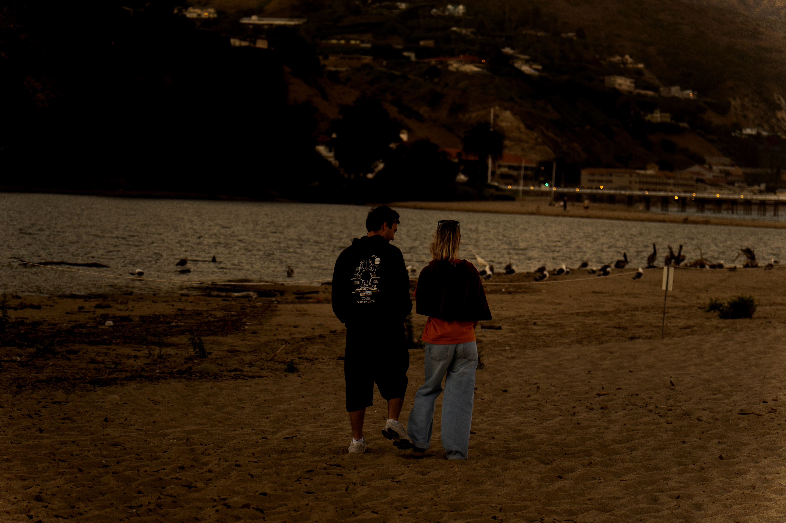

Malibu
Malibu Pier offers peaceful ocean views and the relaxing atmosphere of the California coast. These photographs capture the waves, scenery, and unforgettable sunsets surrounding the pier.









Did you know that Malibu spelled backwards is:
Malibu